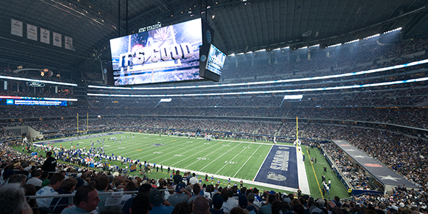
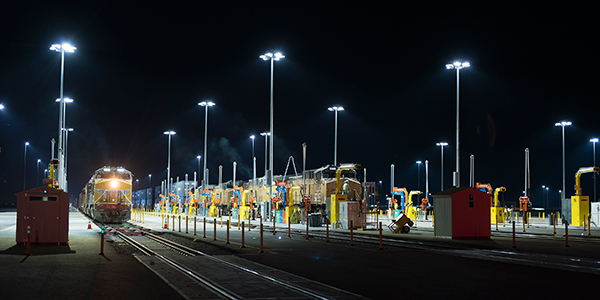

Neshaminy High School Stadium
Neshaminy High School Stadium
The prior lighting at Neshaminy High School’s football stadium created excessive spill light and glare for area residents and presented the school with frequent maintenance issues and high energy consumption. School officials partnered with Musco to install its SportsCluster Green™ system... Read More
 AT&T Stadium – Home of the Dallas Cowboys
AT&T Stadium has been the home of the Dallas Cowboys since it opened in 2009. As one of the largest venues in the NFL, the stadium provides an entertainment experience that few other venues can match with such amenities as the world's largest center hung HD video board. Read More
 Santa Teresa Rail Yard
The Santa Teresa Rail Yard located in Santa Teresa, New Mexico, serves as a critical component to one of the oldest and most important rail corridors in the United States, the Sunset Route. When it came to finding the best possible lighting solution for the yard, the biggest challenge was the... Read More
Musco Engineers Solution to Solve Glare Issues at University of Colorado, Colorado Springs
COLORADO SPRINGS, CO--Musco’s innovative LED lighting system has helped the University of Colorado, Colorado Springs (UCCS) solve a major issue with the surrounding community.
Read More
AFC Bournemouth Enters Premier League in Premier Fashion
BOURNEMOUTH, England--As the newest addition to the Barclays Premier League for the 2015 season, AFC Bournemouth demonstrated that its home field will shine brightly on the world stage with the addition of Musco’s state-of-the-art LED lighting solution at Vitality Stadium.
Read More
Sewell-Thomas Stadium Installs Innovative LED Lighting Solution
OSKALOOSA, IA--The University of Alabama’s Sewell – Thomas Stadium will soon make history as one of the first NCAA baseball fields lit with an LED light source.
Read More
Notre Dame Stadium to Feature State-of-the-Art Lighting Solution
NOTRE DAME, IN and OSKALOOSA, IA--The University of Notre Dame will add another groundbreaking accomplishment to its rich history with the installation of a new LED lighting system at Notre Dame Stadium as part of the university’s “Campus Crossroads” project.
Read More
Notre Dame Stadium to Feature State-of-the-art Lighting Solution,
PanStadia & Arena Management Magazine, November 6, 2015
Press Contact
Jason Van Wyk
Toll Free: 800.825.6020
Direct: 641.673.0411
Email: media.relations@musco.com